Morgen-Übersicht
Starte klar: Fällige Aufgaben auf einen Blick.
BeeFocus App
Die To-do- und Fokus-App, die deinen Tag strukturiert - mit smarter Morgen-Übersicht, Pomodoro-Timer und Kalender.
BeeFocus reduziert alles auf das Wesentliche - damit du schneller ins Tun kommst.
Starte klar: Fällige Aufgaben auf einen Blick.
Pomodoro mit kurzen und langen Pausen und Benachrichtigungen.
Monatsüberblick mit Tagesaufgaben.
Kategorien, Prioritäten, Teilaufgaben - ohne Ballast.
Überall konsistent.
Deutsch & Englisch.
Ein ruhiger Blick durch die wichtigsten iPhone- und iPad-Ansichten der App.
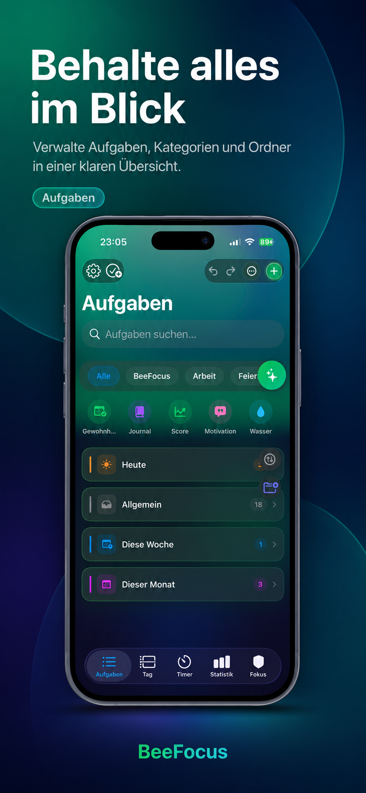
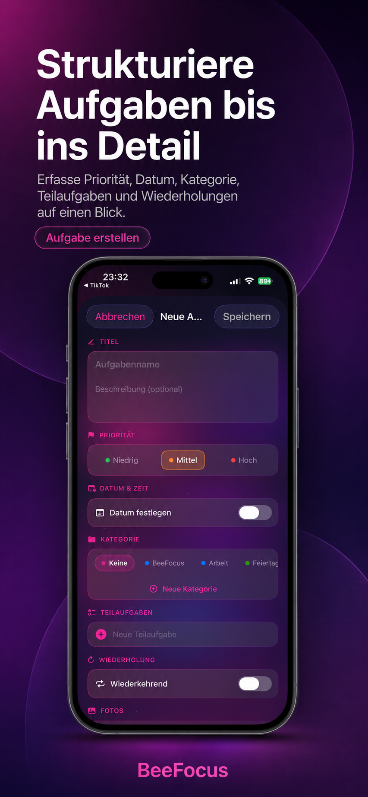
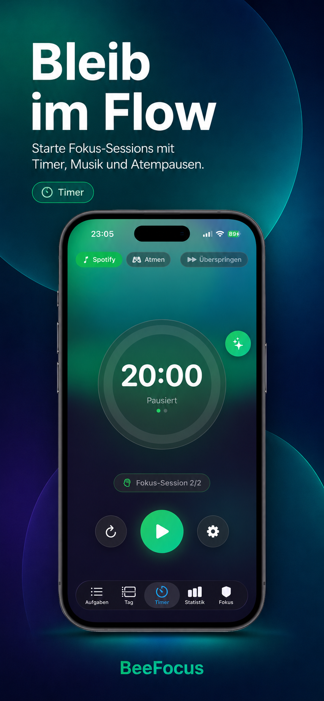
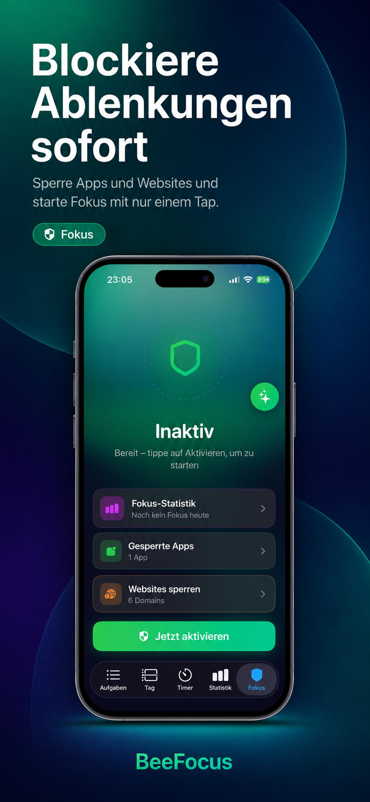
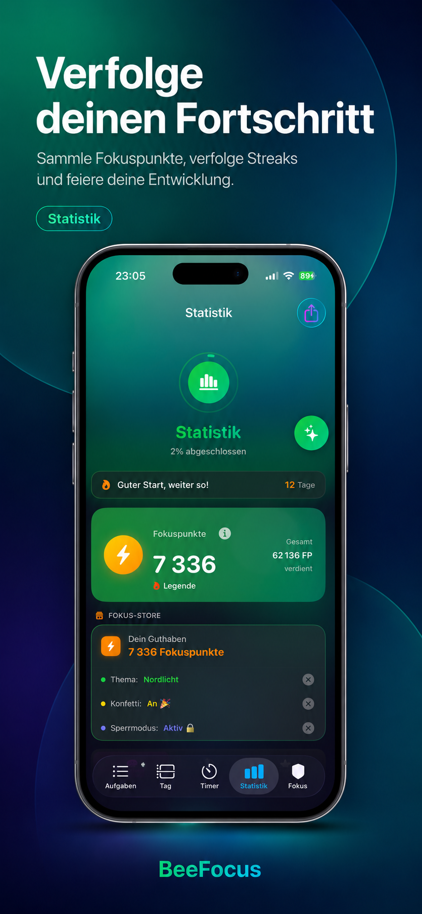
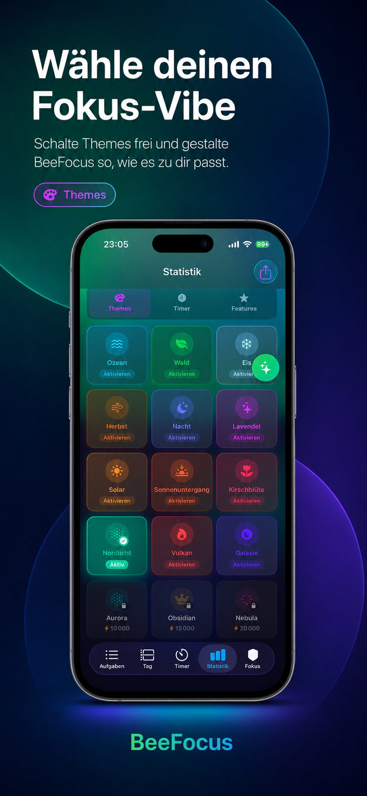
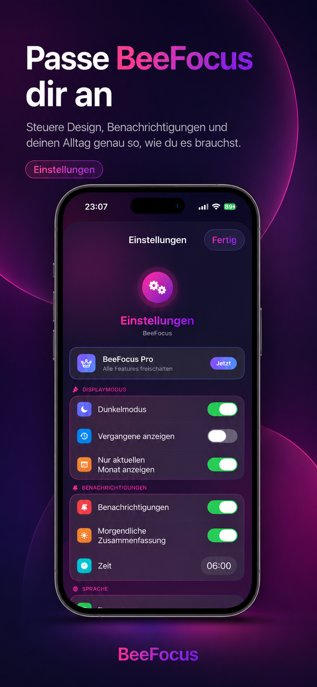
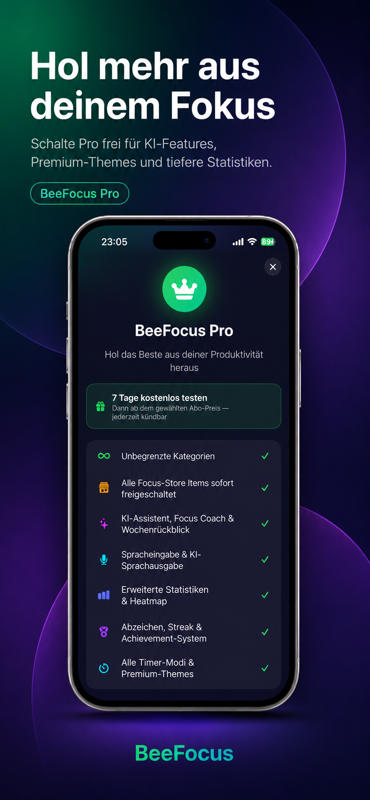
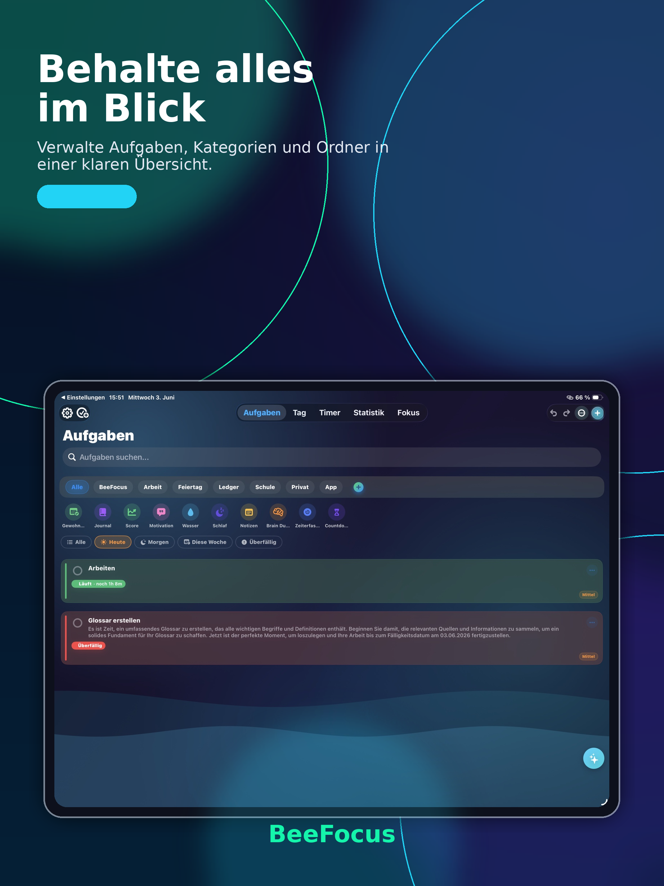
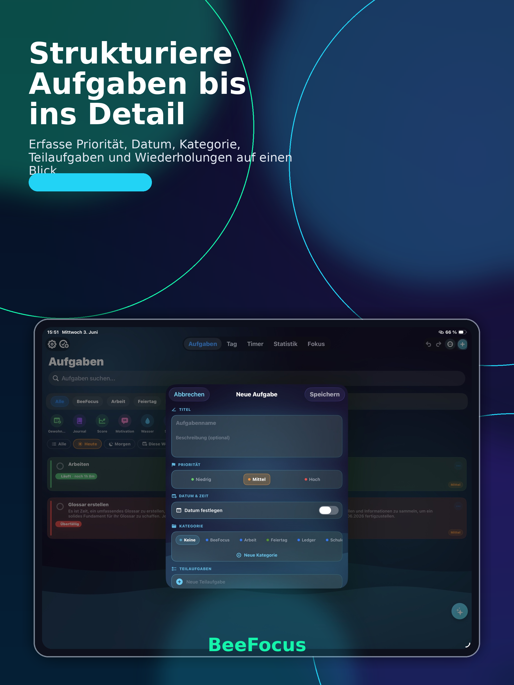
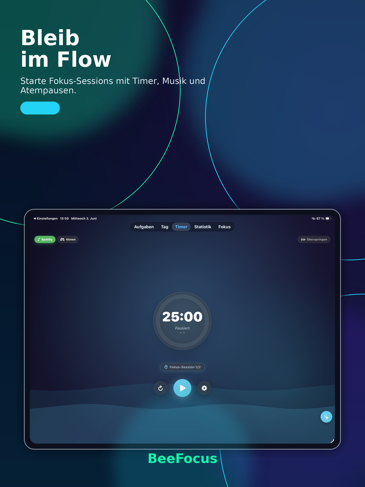
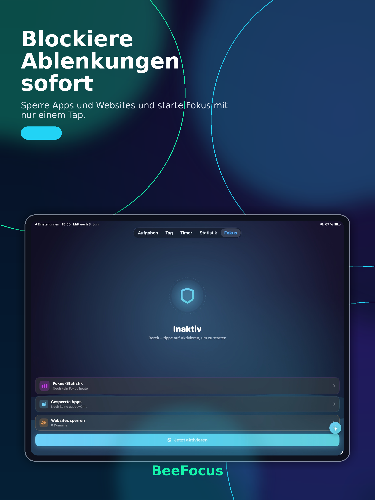
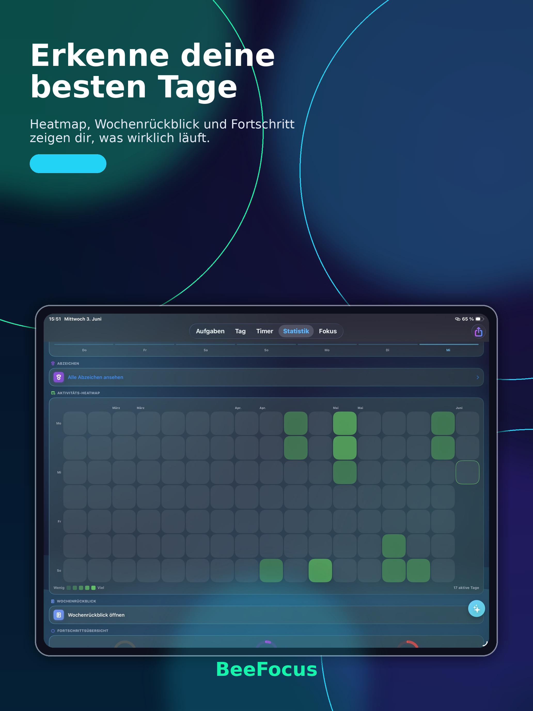
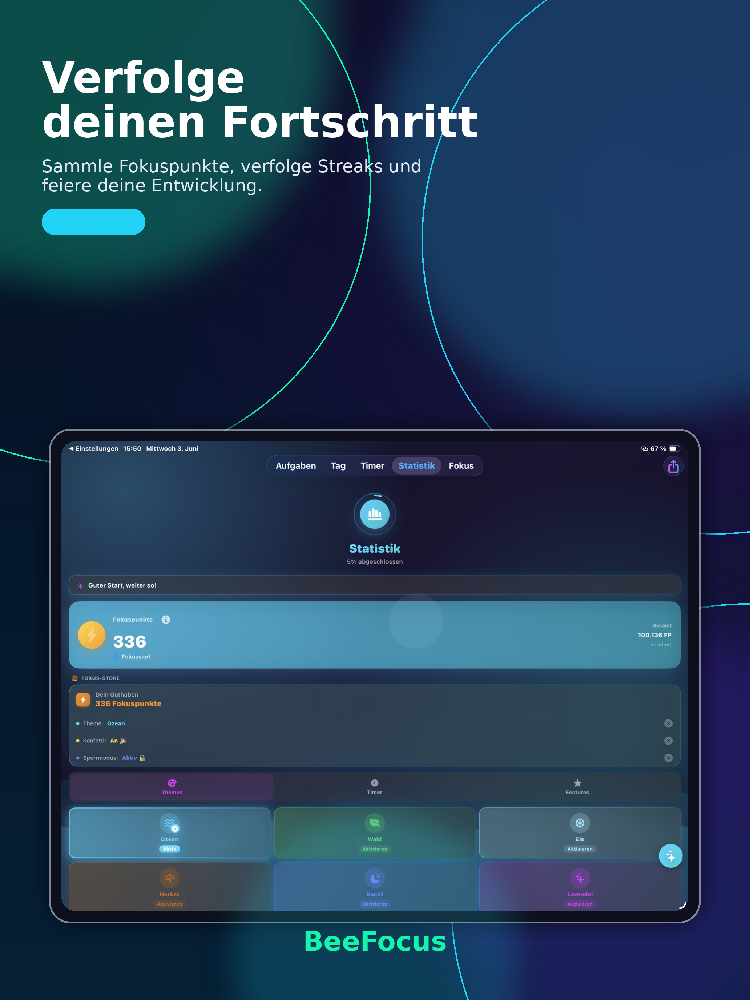
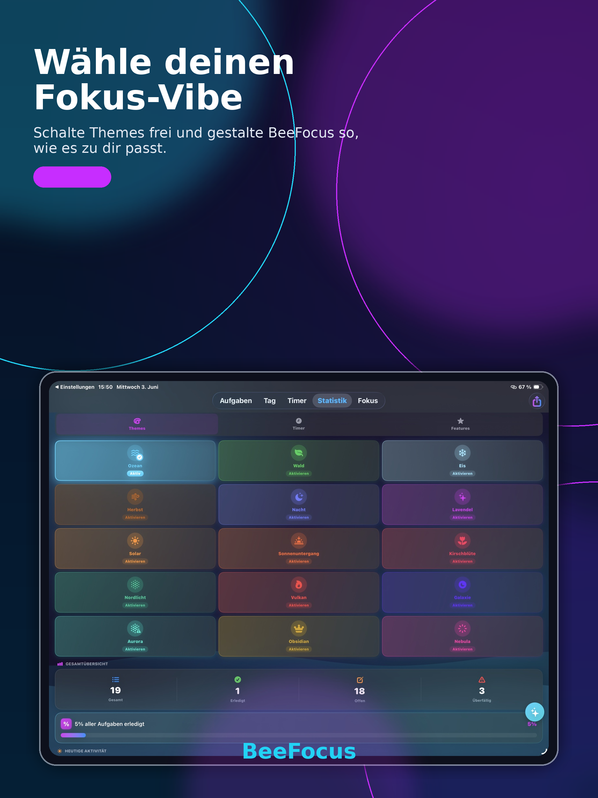
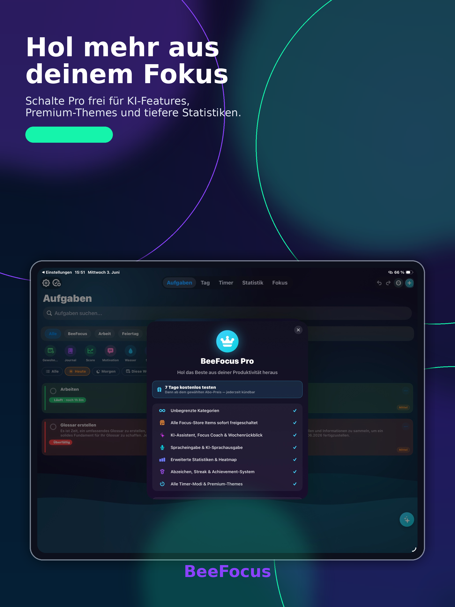
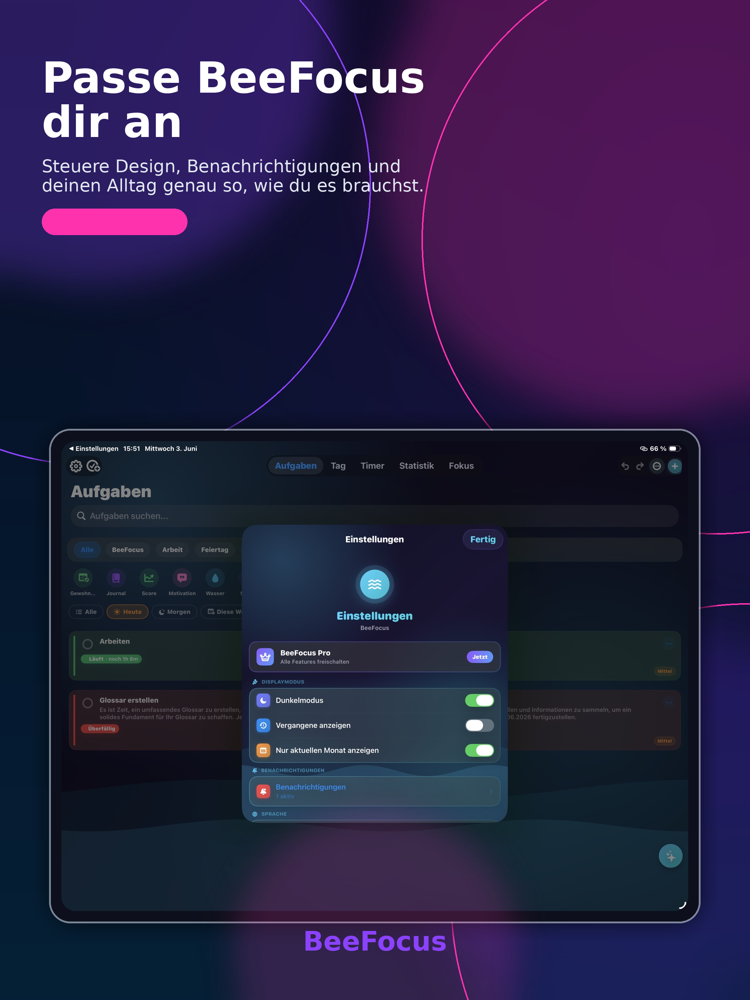
Jede Funktion ist so gestaltet, dass sie deinen Fokus stärkt – nicht lenkt.
Alles von der schnellen Idee bis zur strukturierten Planung.
Tiefe Konzentration – ohne Ablenkung, mit Struktur.
Kleine Gewohnheiten, großer Effekt – jeden Tag.
Gedanken sortieren, den Tag reflektieren, klar bleiben.
Langfristig denken, kurzfristig handeln.
Verstehen, wie du wirklich arbeitest.
Ideen landen sofort – ohne Umwege.
Alles, was den Alltag ein bisschen leichter macht.
Kurze Stimmen von Menschen, die jeden Tag Zeit sparen.
"kein Schnickschnack, keine Werbung oder Abonnements. Super App"
"Super App, um Aufgabenlisten zu organisieren."
Hol dir die App für iOS. Starte in unter zwei Minuten mit deiner Morgen-Übersicht.
Datenschutzfreundlich: Deine Daten bleiben bei dir und werden verschlüsselt synchronisiert.
Kurze Antworten auf die wichtigsten Fragen.
BeeFocus sammelt offene Aufgaben, Termine und Prioritäten in einem kompakten Screen. Du siehst sofort, was heute wichtig ist, und kannst direkt starten.
Ja. Du kannst kurze und lange Pausen frei definieren und Alerts aktivieren, damit deine Sessions sauber getaktet bleiben.
BeeFocus nutzt Cloud-Sync mit verschlüsseltem Abgleich. Änderungen erscheinen auf allen Geräten innerhalb weniger Sekunden.
Ja. Du kannst gelöschte Aufgaben wiederherstellen oder automatisch nach einem Zeitraum entfernen lassen.
Ja, BeeFocus ist aktuell auf Deutsch und Englisch verfügbar. Weitere Sprachen sind geplant.
Ja, du kannst Benachrichtigungen für anstehende Aufgaben, Timer-Sessions und Kalendertermine aktivieren, damit du immer im Fokus bleibst.
Du kannst deine Aufgaben jederzeit exportieren, indem du die jeweilige Aufgabe auswählst und lange gedrückt hältst und auf Teilen klickst. Deine Aufgaben und Timer-Daten werden in einer JSON Datei bereitgestellt, um die Aufgabe mit anderen Personen zu teilen.